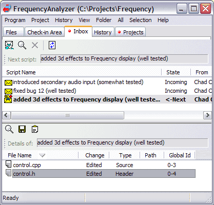

the scripts in the Inbox.
the scripts in the Inbox.Every time your teammates perform a check-in, you receive a script with their changes (it's the so called "push" model). The script arrives through e-mail or your network and ends up in the Inbox tab of the project. Script changes are not reflected in your project files until you execute the scripts in the Inbox.

Before you execute a script, you can review the changes it will make to your files. Select the script in the Inbox. In the details pane below, double-click on a file, and a visual differ opens, showing the script's changes. (You can either use the built-in Differ or the Beyond Compare differ as your file comparator (use the Tools>Differ menu item to switch between them.)
If a script modifies a file that you have checked out and worked on, Code Co-op will attempt to merge changes. You will be notified when this is the case. Always review the results of a merge which will be listed in the Synch Merge tab.